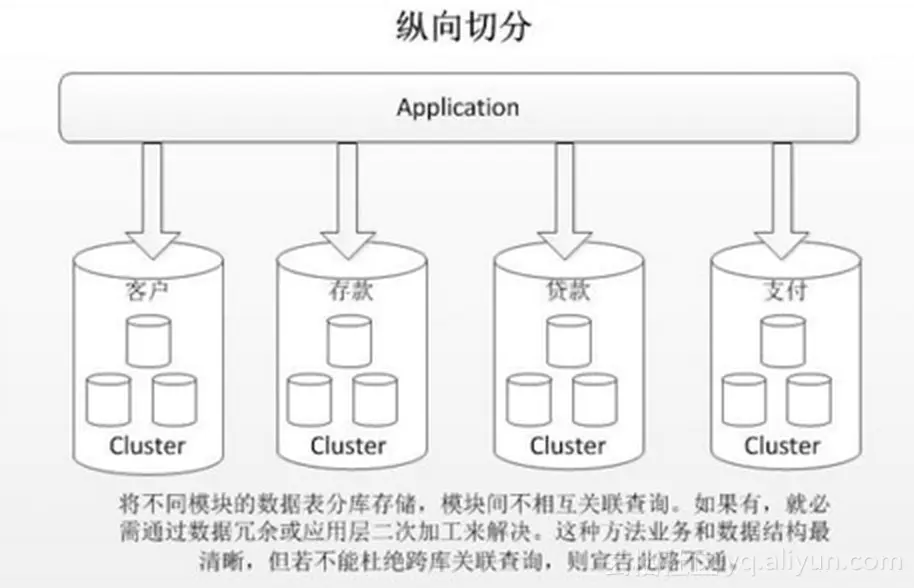
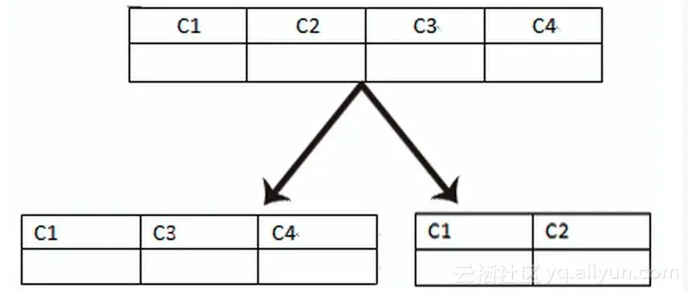
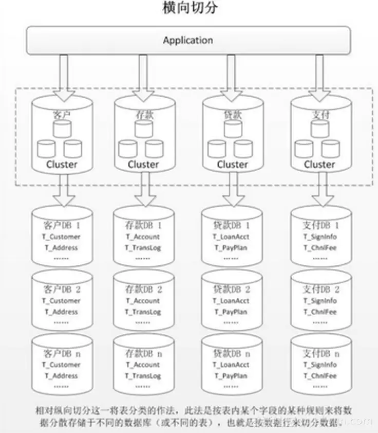
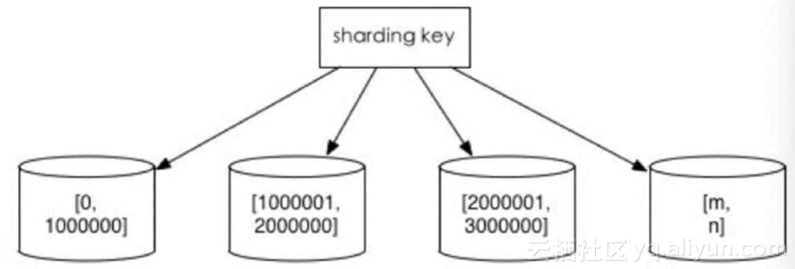
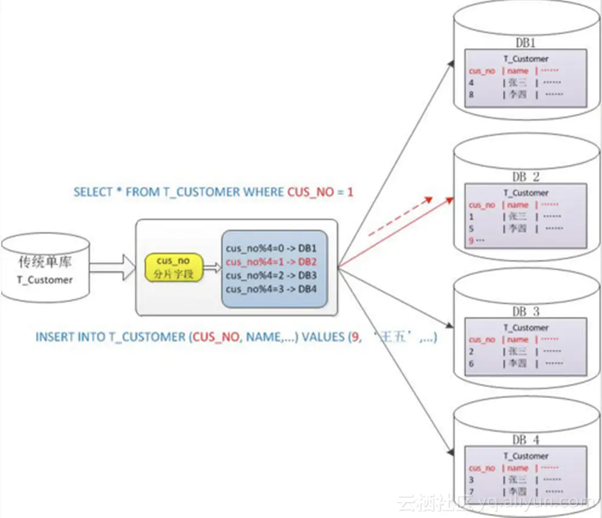
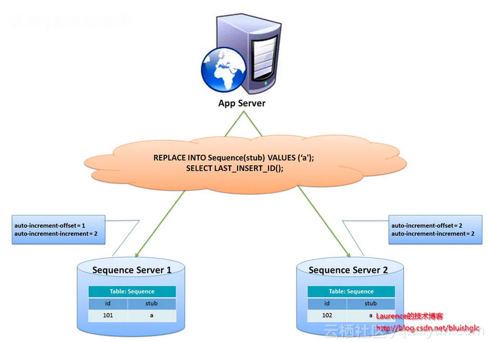
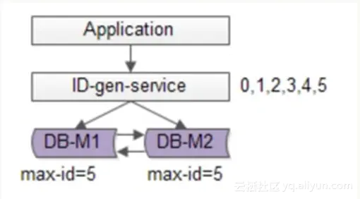
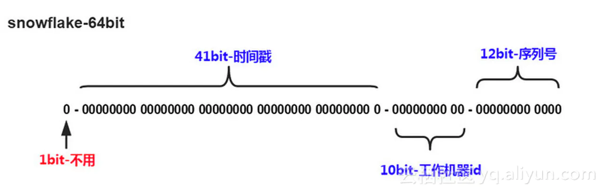

分库分表 #
1 为什么要进行分库分表 #
-
在业务数据量比较少的时代，我们使用单机数据库就能满足业务使用，随着业务请求量越来越多，数据库中的数据量快速增加，这时单机数据库已经不能满足业务的性能要求，数据库主从架构随之应运而生。
-
主从复制是将数据库写操作和读操作进行分离，使用多个只读实例（Slaver Replication）负责处理读请求，主实例（Master）负责处理写请求，只读实例通过复制主实例的数据来保持与主实例的数据一致性，由于只读实例可以水平扩展，所以更多的读请求不成问题。
-
随着云计算、大数据时代的到来，事情并没有完美的得以解决，当写请求越来越多，主实例的写请求变成主要的性能瓶颈。
-
如果仅仅通过增加一个主实例来分担写请求，写操作如何在两个主实例之间同步来保证数据一致性，如何避免双写，此时问题会变得更加复杂，这时就需要用到分库分表（Sharding），对写操作进行切分来解决，如下图所示：

上图中的 DDM 为华为云的中间件产品，全称是 Distributed Database Middleware，作为 RDS（Relational Database Service）的前置分布式数据库访问服务，彻底解决了数据库的扩展性问题，对应用透明地实现海量数据的高并发访问，实现了读写分离和分库分表。
2 分库分表的切分方式 #
- 数据的切分（Sharding）根据其切分规则的类型，可以分为两种切分模式：
- 一种是按照不同的表（或者 Schema）来切分到不同的数据库（主机）上，这种切分方式可以称之为数据的垂直（纵向）切分。
- 另外一种则是根据表中的数据的逻辑关系，将同一个表中的数据按照某种条件拆分到多台数据库（主机）上面，这种切分称之为数据的水平（横向）切分。
- 垂直切分最大的特点就是规则简单，实施也更为方便，尤其适合各业务之间的耦合度非常低，相互影响很小，业务逻辑非常清晰的系统，在这种系统中，可以很容易做到将不同业务模块所使用的的表拆分到不同的数据库中，根据不同的表来进行拆分，对应用程序的影响也更小，拆分规则也会比较简单清晰。
- 水平切分相对于垂直切分来说，稍微复杂一些，因为要将同一个表中的不同数据拆分到不同的数据库中，对于应用程序来说，拆分规则本身比根据表名来拆分更为复杂，后期的数据维护也会更为复杂一些。
- 具体而言，如果单个库太大，这是我们要看是因为表多而导致数据多，还是因为单张表里面的数据多：
- 如果是因为表多而数据多，则使用垂直切分，根据业务切分成不同的库。
- 如果是因为单张表的数据量太大，这时要用水平切分，即把表的数据按照某种规则切分成多张表，甚至多个库上的多张表。
- 分库分表的顺序应该是先垂直分，后水平分，因为垂直分更简单，更符合我们处理现实世界问题的方式。
3 垂直切分 #
3.1 含义 #
-
垂直切分常见有垂直分库和垂直分表两种。
-
垂直分库就是根据业务耦合性，将关联度低的表存储在不同的数据库，做法与大系统拆分为多个小系统类似，按业务分类进行独立划分：
- 这种方法业务和数据结构最清晰。
- 但是模块间不能相互关联查询，如果有就必须通过数据冗余或应用层二次加工来解决。

-
垂直分表是基于数据库中的列进行，如果某个表字段较多，可以新建一张扩展表，将不经常用或字段长度较大的字段拆分出去到扩展表中：
- 这样更便于开发和维护。
- 同时也能避免跨页问题，因为 MySQL底层是通过数据页存储的，一条记录占用空间过大会导致跨页，造成额外的性能开销，
- 另外数据库以行为单位将数据加载到内存中，这样表中字段长度较短且访问频率较高，内存能加载更多的数据，命中率更高，减少了磁盘 IO，从而提升了数据库性能。

3.2 优缺点 #
3.2.1 优点 #
- 解决业务系统层面的耦合，业务清晰。
- 与微服务的治理类似，能对不同业务的数据进行分级管理、维护、监控、扩展等。
- 高并发场景下，垂直切分能在一定程度上提升 IO、数据库连接数、单机硬件资源的瓶颈等。
3.2.2 缺点 #
- 部分表无法
join，只能通过接口聚合方式解决，提升了开发的复杂度。 - 分布式事务处理复杂。
- 依然存在单表数据量过大的问题。
4 水平切分 #
4.1 含义 #
- 当一个应用难以再细粒度的垂直切分，或切分后数据量行数巨大，存在单库读写、存储性能瓶颈，这时候就需要进行水平切分了。
- 水平切分分为库内分表和分库分表两种方式，是根据表内数据内在的逻辑关系，将同一个表按不同的条件分散到多个数据库或多个表中，每个表中只包含一部分数据，从而使得单个表的数据量变小，达到分布式的效果。 
- 库内分表只解决了单一表数据量过大的问题，但没有将表分布到不同机器的库上，因此对于减轻 MySQL 数据库的压力来说，帮助不是很大，大家还是竞争同一个物理机的 CPU、内存、网络 IO，因此最好通过分库分表来解决。
4.2 优缺点 #
4.2.1 优点 #
- 不存在单库数据量过大、高并发的性能瓶颈，提升系统稳定性和负载能力。
- 应用端改造较小，不需要拆分业务模块。
4.2.2 缺点 #
- 跨分片的事务一致性难以保证。
- 跨库的
join关联查询性能较差。 - 数据多次扩展难度和维护量极大。
4.3 切分规则 #
4.3.1 根据数值范围 #
4.3.1 含义 #
- 根据时间区间或ID 区间来切分，例如：
- 按日期将不同月甚至是日的数据分散到不同的库中。
- 将
userid为 1~9999 的记录分到第一个库，10000~20000 分到第二个库，以此类推。
- 某种意义上，某些系统中使用的冷热数据分离，将一些使用较少的历史数据迁移到其他库中，业务功能上只提供热点数据的查询，也是类似的实践。
4.3.2 优缺点 #
4.3.2.1 优点 #
- 单表大小可控。
- 天然便于水平扩展，后期如果想对整个分片集群扩容时，只需要添加节点即可，无需对其他分片的数据进行迁移。
- 使用分片字段进行范围查找时，连续分片可可快速定位分片进行快速查询，有效避免跨分片查询的问题。
4.3.2.2 缺点 #
- 热点数据成为性能瓶颈，连续分片可能存在数据热点，例如按时间字段分片，有些分片存储最近时间段的数据，可能会被频繁的读写，而有些分片存储的历史数据，则很少被查询。 
4.3.2 根据数值取模 #
- 一般采用
hash取模的切分方式，例如，将Customer表根据cusno字段切分到 4 个库中，余数为 0 的放到第一个库，余数为 1 的放到第二个库，以此类推，这样同一个用户的数据会分散到同一个库中，如果查询条件带有cusno字段，则可明确定位到相应库去查询。
4.3.2.1 优点 #
- 数据分片相对比较均匀，不容易出现热点和并发访问的瓶颈。
4.3.2.2 缺点 #
- 后期分片集群扩容时，需要迁移旧的数据（使用 一致性哈希算法能较好的避免这个问题）。
- 容易面临跨分片查询的复杂问题，比如上例中，如果频繁用到的查询条件中不带
cusno时，将会导致无法定位数据库，从而需要同时向 4 个库发起查询，再在内存中合并数据，取最小集返回给应用，分库反而成为拖累。 
5 分库分表带来的问题 #
5.1 事务一致性问题 #
5.1.1 分布式事务 #
- 当更新内容同时分布在不同库中，不可避免会带来跨库事务问题，跨分片事务也是分布式事务，没有简单的方案，一般可使用XA 协议和 两阶段提交来处理。
- 分布式事务能最大限度保证数据库操作的原子性，但在提交事务时需要协调多个节点，推后了提交事务的时间点，延长了事务的执行时间，导致事务在访问共享资源时发生冲突或死锁的概率增高。
- 随着数据库节点的增多，这种趋势会越来越严重，从而成为系统在数据库层面上水平扩展的枷锁。
5.1.2 最终一致性 #
-
对于那些性能要求很高，但对一致性要求不高的系统，往往不苛求系统的实时一致性，只要在允许的时间段内达到最终一致性即可，可采用事务补偿的方式。
-
与事务在执行过程中发生错误后立即回滚的方式不同，事务补偿是一种事后检查补救的措施，一些常见的实现方法有：
- 对数据进行对账检查。
- 基于日志进行对比。
- 定期同标准数据来源进行同步。
事务补偿还要结合业务系统来考虑。
5.2 跨节点关联查询 join 问题 #
切分之前，系统中很多列表和详情页所需的数据可以通过 sql join 来完成，而切分之后，数据可能分布在不同的节点上，此时 join 带来的问题就比较麻烦了，考虑到性能，应该尽量避免使用 join 查询。
解决这个问题可以采用以下方法：
5.2.1 全局表 #
- 全局表，也可以看做是数据字典表，就是系统中所有模块都可能依赖的一些表。
- 字典表一般具有以下特性：
- 变动不频繁。
- 数据量总体变化不大。
- 数据规模不大，很少有超过数十万条记录。
比如 MyCat 定义的全局表具有以下特性：
- 全局表的插入、更新操作会实时在所有节点上执行，保持各个分片的数据一致性。
- 全局表的查询操作，只从一个节点获取。
- 全局表可以跟任何一个表进行
join操作。
5.2.2 字段冗余 #
- 这是一种典型的反范式设计，利用空间换时间，为了性能而避免
join查询。 - 例如，订单表保存
userId的时候，也将userName冗余保存一份，这样查询订单详情时就不需要再去查询买家user表了。 - 但这种方法适用场景也有限，比较适用于依赖字段比较少的情况，而且冗余字段的一致性也比较难保证，就像上面订单表的例子，买家修改了
userName后，是否需要在历史订单中同步更新呢，这也需要结合实际业务场景进行考虑。
5.2.3 数据组装 #
- 在系统层面，分两次查询，第一次查询的结果集中找出关联数据
id，然后根据id发起第二次请求得到关联数据，最后将得到的数据进行字段拼装。
5.2.4 ER 分片 #
- 关系型数据库中，如果可以先确定表之间的关联关系，并将那些存在关联关系的表记录存放在同一分片上，那么就能较好的避免跨分片
join问题，在1:1或1:n的情况下，通常按照主表的ID主键切分，如下图所示：
- 这样一来，$Data \space Node1$ 上面的
order订单表与orderdetail订单详情表就可以通过orderId进行局部的关联查询了，$Data \space Node2$ 上也一样。
5.3 跨节点分页、排序、函数问题 #
- 跨节点多库进行查询时，会出现
limit分页、order by排序等问题。 - 分页需要按照指定字段进行排序：
- 当排序字段就是分片字段时，通过分片规则就比较容易定位到指定的分片。
- 当排序字段为非分片字段时，就变得比较复杂了，需要先在不同的分片节点中将数据进行排序并返回，然后将不同分片返回的结果集进行汇总和再次排序，最终返回给用户，如下图所示：

- 上图中只是取第一页的数据，对性能影响还不是很大，但是如果取的页数很大，情况则变得复杂很多，因为各分片节点中的数据可能是随机的，为了排序的准确性，需要将所有节点的前 $N$ 页数据都排序做好合并，最后再进行整体的排序。
- 这样的操作很耗费 CPU 和内存资源的，所以页数越大，系统的性能也会越差。
- 在使用
max、min、sum、count之类的函数进行计算的时候，也需要先在每个分片上执行相应的函数，然后将各个分片的结果集进行汇总和再次计算，最终将结果返回，如下图所示：
5.4 全局主键避重问题 #
在分库分表环境中，由于表中数据同时存在不同数据库中，主键值平时使用的自增长将无用武之地，某个分区数据库自生成的 ID 无法保证全局唯一，因此需要单独设置全局主键，以避免跨库主键重复问题，常见的主键生成策略如下：
5.4.1 UUID #
- UUID 标准形式包含32 个 16 进制数字，分为 5 段，形式为
8-4-4-4-12的 36 个字符，例如550e8400-e29b-41d4-a716-446655440000。 - 优点：
- UUID 是主键生成的最简单的方案，本地生成、性能高、没有网络耗时。
- 缺点：
- 由于UUID 非常长，会占用大量的内存空间。
- 作为主键建立索引和基于索引进行查询时都会存在性能问题，在 InnoDB 下，UUID 的无序性会引起数据位置频繁变动，导致分页。
5.4.2 结合数据库维护主键 ID 表 #
-
在数据库中建立
sequence表：CREATE TABLE sequence ( id bigint(20) unsigned NOT NULL auto_increment, stub char(1) NOT NULL default '', PRIMARY KEY (id), UNIQUE KEY stub (stub) )ENGINE=MyISAM; -
studb字段设置为唯一索引，stub值在sequence表中只有一条记录，可以同时为多张表生成全局ID，sequence表的内容，如下所示：+--------------------+-------+ | id | stub | +--------------------+-------+ | 72157623227190423 | a | +--------------------+-------+ -
使用 MyISAM 存储引擎而不是 InnoDB，以获取更高的性能，因为 MyISAM 使用的是表级别的锁，对表的读写是串行的，所以不用担心在并发时两次读取同一个 ID 值。
-
优点：
- 方案简单。
-
缺点：
- 存在单点问题，强依赖数据库，当数据库异常时，整个系统都不可用。
- 配置主从可以增加可用性，但当主库挂了，主从切换时，数据一致性在特殊情况下难以保证。
- 性能瓶颈限制在单台 MySQL 的读写性能。
5.4.3 Flickr 团队使用的主键生成策略 #
- Flickr 团队使用的一种主键生成策略，与上面的
sequence表方案类似，但更好的解决了单点和性能瓶颈问题。 - 这一方案的整体思想是建立 2 个以上的全局 ID 生成的服务器，每个服务器上只部署一个数据库，每个库有一张
sequence表用于记录当前全局 ID，表中 ID 增长的步长是库的数量，起始值依次错开，这样能将 ID 的生成散列到各个数据库上，如下图所示：  - 由两个数据库服务器生成 ID，设置不同的
auto_increment值，第一台的sequence的起始值为 1，每次步长增长 2，另一台的sequence起始值为 2，每次步长增长也是 2，结果第一台生成的 ID 都是奇数 $(1,3,5,7,…)$，第二台生成的 ID 都是偶数 $(2,4,6,8,…)$。 - 优点：
- 这种方案将生成 ID 的压力均匀分布在两台机器上。
- 同时提供了系统容错，第一台出现了错误，可以自动切换到第二台机器上获取 ID。
- 缺点：
- 系统添加机器水平扩展时较为复杂。
- 每次获取 ID 都要读写一次数据库，数据库的压力还是很大，只能靠堆机器来提升性能。
5.4.4 优化后的 Flickr 方案 #
- 可以基于 Flickr 的方案继续优化，使用批量的方式降低数据库的写压力，每次获取一段区间的 ID 号段，用完之后再去数据库获取，可以大大减轻数据库的压力，如下图所示： 
- 还是使用两台数据库服务器保证可用性，数据库中只存储当前的最大 ID，ID 生成服务器每次批量拉取 6 个 ID，先将
max_id修改为 5，当应用访问 ID 生成服务时，就不需要访问数据库，而是从号段缓存中依次派发 0 ~ 5 的 ID，当这些ID 发完后，再将max_id修改为 11，下次就能派发 6 ~ 11的ID，于是数据库的压力降低为原来的$\frac16$。
5.4.5 Snowflake分布式自增ID算法 #
- Twitter的Snowflake算法解决了分布式系统生成全局ID的需求，生成64位的Long型数字，组成部分如下图所示：

- 第一位未使用。
- 接下来是41位的毫秒级时间，41位的长度可以表示69年的时间。
- 5位Data Center ID，5位Worker ID，10位的长度最多支持部署1024个节点。
- 最后12位是毫秒内的计数，12位的计数顺序号支持每个节点每毫秒产生4096个ID序列。
- 优点：
- 毫秒数在高位，生成的ID整体上按时间趋势递增。
- 不依赖第三方系统，稳定性和效率较高，理论上QPS约为$ 409.6w/s \space (1000 * 2^{12})$。
- 整个分布式系统内不会产生ID碰撞。
- 可根据自身业务灵活分配
bit位。
- 缺点：
- 强依赖机器时钟，如果时钟回拨，则可能导致生成ID重复。
5.5 数据迁移、扩容问题 #
- 当业务高速发展，面临性能和存储的瓶颈时，才会考虑分片设计，此时就不可避免的需要考虑历史数据迁移的问题，一般做法是先读出历史数据，然后按指定的分片规则再将数据写入到各个分片节点中。
- 此外，还需要根据当前的数据量和QPS，以及业务发展的速度，进行容量规划，推算出大概需要多少分片，一般建议单个分片上的单表数据量不超过1000W。
- 如果采用数值范围分片，只需要添加节点就可以进行扩容了，不需要对分片数据进行迁移，如果采用的是数值取模分片，则考虑后期扩容的问题就相对比较麻烦。